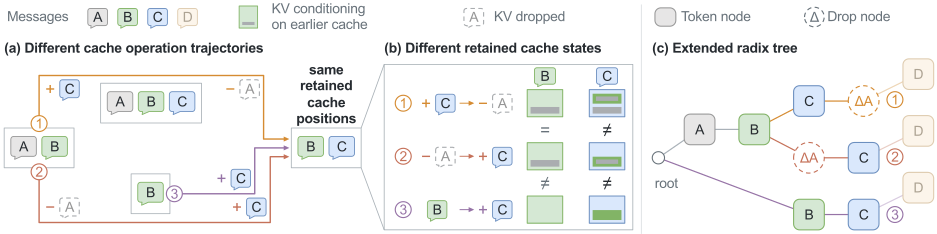
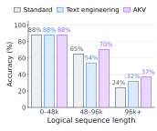
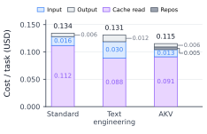
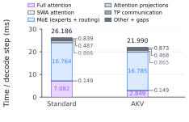

Longer histories increase KV storage and attention costs. Context engineering edits text. Cache engineering directly manages KV states.
Context Engineering
🙁
Indirect cache control.Edit text messages, with no direct control over retained KV.
🙁
More computation.Prefix edits invalidate later KV, requiring re-prefill.
🙁
Lost historical information.Recomputing B without A loses A’s contribution to B’s original KV.
Cache Engineering
🙂
Direct cache control.Drop selected KV without deleting the corresponding text.
🙂
Less computation through KV reuse.AKV serving reuses retained, compatible KV without re-prefill.
🙂
Preserved historical information.B’s retained KV can still carry information from A after A’s KV is dropped.
Colored blocks inside the cache represent information carried from earlier messages.
Explore the three operations +
To enable cache engineering, we define three cache operations: Append, Drop, and Repos. Agents combine them to control the active cache throughout execution.
Logical tokens
ABCDNew token
Active KV cache
K / V pos 0K / V pos 1K / V pos 2K / V pos 3
Append. Compute new tokens against the active cache, append their KV states, and advance the logical sequence and encoding positions.
The AKV serving system
AKV makes cache engineering work.
With Append, Drop, and Repos, the same token prefix and retained positions can yield different cache states. AKV tracks both token and operation histories to correctly reuse and restore these states.
WHY CACHE HISTORY MATTERS
The same tokens. Different KV states.
Three operation histories
One extended radix tree

ΔA = drop A’s KVInsets show information carried from earlier messages.Three mechanisms behind AKV serving +
01 / REUSE
Reuse the right states.
The extended radix tree matches token and cache-operation histories. Compatible states remain shared across requests.
02 / EVICT
Free unused KV safely.
Dropping KV from one request does not immediately free shared storage. AKV reclaims it when no active computation or restoration needs it, while keeping cached descendants reachable.
03 / RESTORE
Restore in one prefill pass.
Missing states are reconstructed with segment-batch attention. It reproduces historical attention visibility and positions in one prefill pass.
Stateless interface: three requests, one server +
Every request carries its full message and operation histories. The server reuses compatible KV states when available and restores missing states.
Each request includes earlier messages and operations. Message fields are abbreviated.
SERVER · RETAINED COMPUTATION
New request. Reuse the work.
Request 1 · Append m₀
Send message 0 with no other cache operations.
Request 2 · Append m₁ → Drop m₀
Send messages 0–1. Reuse message 0’s KV to compute message 1, then drop message 0’s KV.
Request 3 · Append m₂ → Drop m₁ → Repos
Send messages 0–2 and carry forward the earlier drop. Reuse message 1’s KV to compute message 2, drop message 1’s KV, then reposition the retained keys.
Prefill states only; decoding omitted. Token positions are schematic. Drop changes active KV, not message history.
Benchmark results
Higher success rates. Lower inference cost.
Across three models and four agent benchmarks, AKV improves average success rate by 1.7 percentage points while reducing inference cost by 27.7% relative to Standard.
Standard
Summarize at a higher threshold.
Text Engineering
Summarize at a lower threshold of 48K tokens.
AKV
Drop older tool-response KV, keeping only the latest 12 rounds.
Three models · Four agent benchmarks
Accuracy (%) · Higher is better
StandardText EngineeringAKV
Accuracy is measured as task pass rate.
Costs are API-equivalent estimates from active input and generated output lengths. They use Groq's GPT-OSS-120B rates, MiniMax's MiniMax-M2.7 rates, and the official Qwen3-30B-A3B rates for MiroThinker-1.7-Mini. Repositioned tokens count as cache hits.
Accuracy analysis +
Preserving information on longer trajectories.
On GPT-OSS-120B and BrowseComp-Plus, all three methods have similar accuracy below 48K logical tokens. As trajectories grow longer, baseline accuracy falls faster than AKV’s. We attribute this gap to information lost during summarization.
Cache engineering preserves retained KV states, which can still carry information from dropped history.

GPT-OSS-120B · BrowseComp-Plus. Accuracy grouped by logical sequence length.
Cost analysis +
Lower costs from reads and re-prefill.
Fewer cache reads. Dropping older tool-response KV reduces the history accessed by later requests, lowering cache-read costs by about 19% relative to Standard.
Less re-prefill. Reusing retained KV avoids recomputation after summarization rewrites the prefix, lowering input costs by about 57% relative to Text Engineering.

BrowseComp-Plus cost breakdown. Values are USD per task; the reductions above refer to individual cost components.
Summarization settings +
Standard. Summarization is triggered at 96K tokens for GPT-OSS-120B (128K context window) and MiniMax-M2.7 (200K context window), and at 192K tokens for MiroThinker-1.7-Mini (256K context window).
Text Engineering. All three models use a lower summarization threshold of 48K tokens.
Both baselines use a Pi-derived policy with its prompts, conversation serialization, cut-point selection, and default retention and summary-output budgets. Summarization is triggered by exact prompt token counts.
Summaries use the agent’s model and reasoning settings, replacing older dialogue while preserving system/developer instructions and selected recent messages. Empty summaries are rejected; failures follow the benchmark error protocol without retry.
More solved tasks. Less GPU time.
These gains also translate into better task outcomes under a GPU budget. In a separate 100-task SWE-bench Verified experiment, AKV reaches a higher final success rate with fewer GPU hours.
Task success under a GPU budgetGPT-OSS-120B · 100 SWE-bench Verified tasks · 8 A800 GPUs
Standard C=12Text Engineering C=14AKV C=14
0.0 GPU h
Successes accumulated out of 100 tasks. Mean of three runs; shading shows the min–max range. C denotes concurrency.Why Standard uses C=12
C=12 gives Standard its highest input and output throughput in the separate concurrency sweep below. At C=14 and C=16, KV-cache pressure increases re-prefill and degrades serving performance. Using C=12 avoids those degraded settings for Standard; Text Engineering and AKV use C=14. This task-success comparison therefore uses different concurrency settings.
Serving efficiency
Higher throughput. Lower latency.
Across all tested concurrency levels, AKV delivers higher input and output throughput, with lower P95 TTFT and request latency than both baselines on long-context agent workloads.
Hardware. Eight A800-80GB GPUs serve GPT-OSS-120B in BF16: four for prefill and four for decode, each with tensor parallelism 4. Both baselines use SGLang; AKV extends it with cache-operation support.
Workload. All methods use the same 80 tasks and ordering, selected by peak context length. Each method replays its own policy trajectories, so turn counts and output lengths can differ. Tool responses are replayed, with prescribed output lengths at temperature 0.
Measurement windows. AKV runs at C=14 and C=16 are measured through the first 30 task completions, including all requests within the window. High-concurrency Standard runs use a one-hour window. Replacement tasks maintain concurrency; unfinished requests may remain at cutoff.
Metrics. TTFT measures time to first token; TPOT measures time per output token. Lower TPOT alone does not imply higher overall throughput.
4.68×Input throughput
2.67×Output throughput
17.17×P95 TTFT speedup
7.51×P95 request latency speedup
Versus Standard at concurrency 16, in the separate 80-task workload replay.
Source of improvements +
Less time spent on full attention.
At the same batch size, GPT-OSS-120B’s full-attention time drops from 7.082 to 2.849 ms per decode step. This accounts for nearly all of the measured step-time reduction, from 26.186 to 21.990 ms.
After a Drop, decoding attends only to the retained active context. Each step loads less KV data from GPU memory and performs less attention computation over historical tokens.

GPT-OSS-120B · Same-batch-size decode profiling, separate from the concurrency sweep above.
Why the gap grows at high concurrency.
At the tested concurrency levels above 12 (C=14 and C=16), KV-cache pressure makes Standard spend more time on re-prefill, leaving fewer requests decoding concurrently. Its TPOT can decrease even as request latency rises and throughput falls. The four charts above capture the overall serving benefit.
Recursive self-improvement
Agents can self-improve.
Rolling drop is a starting point. AKV’s cache interface also lets agents search, evaluate, and refine their own cache policies.
On BrowseComp-Plus, MiniMax-M2.7 reduces cost by 17.8% relative to Standard at iteration 6 while meeting Standard’s accuracy baseline.